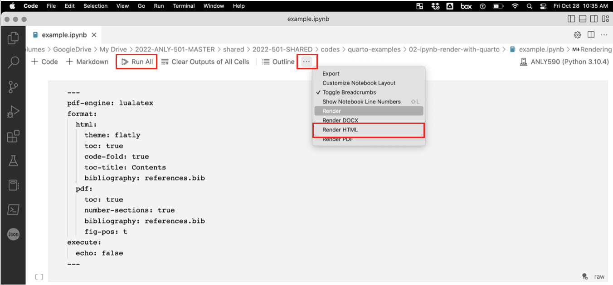
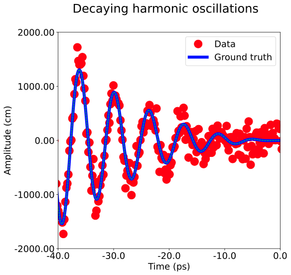
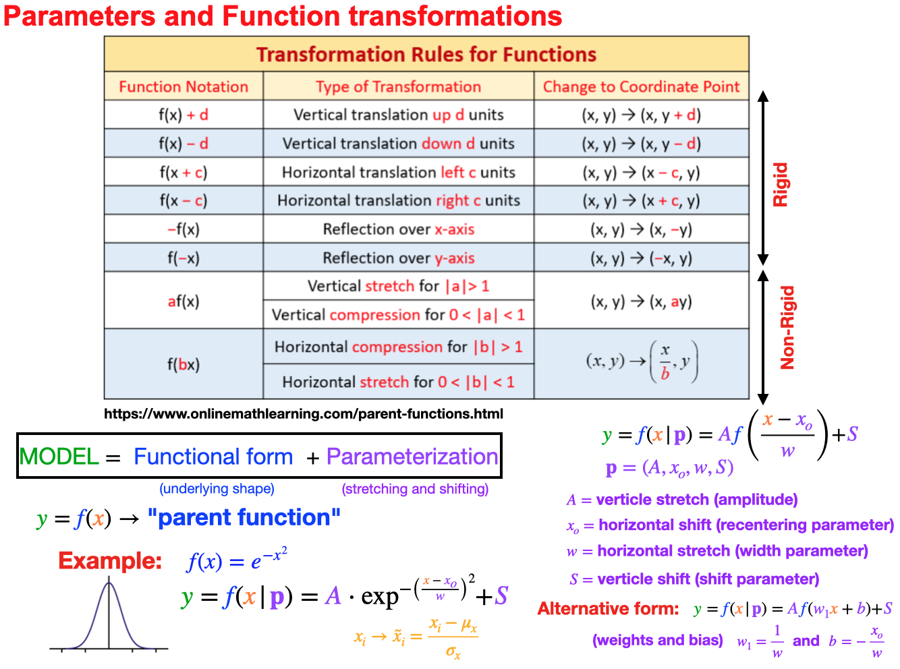

flowchart LR
A[Hard edge] --> B(Round edge)
B --> C{Decision}
C --> D[Result one]
C --> E[Result two]
You can run python code. This will be discussed more in the (sec-code)
Here is an example of a citation (Sharma et al. 2018)
If you are also having trouble consider trying the following; (see Figure fig-render)
Make sure the terminal is visible in VSC so you can see the rendering output to troubleshoot if needed.
Work in .ipynb NOT in the .qmd format
Put the relevant header command content at the top of the .ipynb as a “raw” code cell
Use “Run All” in VSC and make sure all plots show up inside the .ipynb before rendering
Render the file by clicking the three dots and clicking “Render HTML” (the last four options are quarto rendering methods) (see image below)
If something doesn’t seem to work or is buggy, try quitting and restarting VSC.
ALTERNATIVE OPTION: You can also render the .ipynb using the command line with –> quarto preview "example.ipynb"
NOTE: There is a working example of a .ipynb notebook rendered to html using quarto at the following link .

This is an example of an inline math LaTex equation \(f(x)=x^2\)
This is an example of an display math LaTex equation \[f(x)=x^2+1\]
Black-Scholes (Equation eq-black-scholes) is a mathematical model that seeks to explain the behavior of financial derivatives, most commonly options:
\[ \frac{\partial \mathrm C}{ \partial \mathrm t } + \frac{1}{2}\sigma^{2} \mathrm S^{2} \frac{\partial^{2} \mathrm C}{\partial \mathrm C^2} + \mathrm r \mathrm S \frac{\partial \mathrm C}{\partial \mathrm S}\ = \mathrm r \mathrm C \tag{1}\]
Wave equation (Equation eq-wave) is a mathematical model that seeks to explain the behavior of financial derivatives, most commonly options:
\[ \frac {\partial ^{2}u}{\partial t^{2}}=c^{2}\left({\frac {\partial ^{2}u}{\partial x_{1}^{2}}}+{\frac {\partial ^{2}u}{\partial x_{2}^{2}}}+\cdots +{\frac {\partial ^{2}u}{\partial x_{n}^{2}}}\right) \tag{2}\]
Multi-line equation (Equation eq-multi) \[ \begin{split} A & = \frac{\pi r^2}{2} \\ & = \frac{1}{2} \pi r^2 \end{split} \tag{3}\]
Quarto has native support for embedding Mermaid and Graphviz diagrams.
This enables you to create flowcharts, sequence diagrams, state diagrams, gnatt charts, and more using a plain text syntax inspired by markdown.
For example, here we embed a flowchart created using Mermaid:
flowchart LR
A[Hard edge] --> B(Round edge)
B --> C{Decision}
C --> D[Result one]
C --> E[Result two]
In this section we show how to demonstate, caption, and reference figures (both generated with code and externally loaded)
In (Figure fig-decay) we show a plot showing decaying oscillations
import matplotlib.pyplot as plt
import numpy as np
#GENERATE DATA
N=500 #number of data points
x=np.linspace(-45,45.0, N);
ye=x*x*np.sin(x) #exact
y=ye+np.random.normal(0, 200, N) #add noise
#FONT SIZE
FS=18
#DEFINE FIG+AX OBJECTS
fig, ax = plt.subplots()
#https://www.canva.com/colors/color-wheel/
ax.plot(x,y,'o',color='#FF0012', markersize=16, label='Data')
ax.plot(x,ye, color='#0012FF' ,linewidth=6, label='Ground truth')
ax.plot(x,ye,color='#12FF00' , linewidth=1, linestyle='dashed')
#SET LEGEND
ax.legend(fontsize=FS)
#SET FIGURE SIZE
fig.set_size_inches(8, 8)
#FIGURE TITLE
fig.suptitle('Decaying harmonic oscillations', fontsize=24)
#AXIS LABELS
ax.set_xlabel('Time (ps)', fontsize=FS)
ax.set_ylabel('Amplitude (cm)', fontsize=FS)
# #X-Y PLOT RANGE
ax.set_xlim([-40,0])
ax.set_ylim([-1750,1750])
#AXIS TIC VALUES
ax.set_xticks([-40,-30,-20,-10,0],fontsize=20)
ax.set_yticks([-2000,-1000,0,1000,2000],fontsize=20)
#CONTROL AXIS TICK FORMAT
ax.yaxis.set_major_formatter(plt.FormatStrFormatter('%4.2f'))
ax.xaxis.set_major_formatter(plt.FormatStrFormatter('%.1f'))
#AXIS TIC FONT SIZE
ax.tick_params(axis='both', which='major', labelsize=FS)
ax.tick_params(axis='both', which='minor', labelsize=FS)
#RENDER AND SHOW IMAGE
plt.show()
Here is another example of a citation (Hickman and Mishin 2016)
In (Figure fig-other) we show a plot showing decaying oscillations
